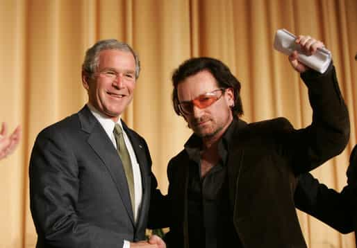

< < < Back
Former “Anti Capitalist” Bono Is A Billionaire Thanks To Facebook – Return Of Kings
“Irish” rocker Bono has become the world’s most cashed-up pop star and is now a billionaire in US dollar terms. A well-timed investment in Facebook six years ago means that he raked in more from one investment than all his other ventures combined. But it just wouldn’t be a page from Bono’s life without some mammoth double standard being uncovered.
The highly, highly lucrative parlay into Facebook has coincided with seismic shifts in Bono’s stated economic philosophy. In the last two years he has declared capitalism as the prophylactic for global poverty, in contrast to his former anti-capitalist stance.
When celebrities ideologically rampage against capitalism or whatever else they perceive as a social ill, they are giving themselves personal advertising that money simply cannot buy. Gullible folks by the millions are willing to overlook the hypocrisy embedded in almost every sentence coming from a celebrity campaigner’s mouth.
In relation to capitalism, the irony that the most famous celebrities earn much more than the average CEO is perennially relegated to a real life version of minuscule footnotes.
Already untenable to justify his wealth vis-à-vis his political “philosophy,” recent years have probably forced Bono to come out as a supporter of “capitalism” (I see generalities, however, and no real details, probably as he’s a musician).
Bono’s shift is far from courageous
It must be a coincidence that Bono bought this manor in Dublin, just one element of his property portfolio, using CD, digital music and other royalties that depend entirely on capitalist modes of production and distribution.
A particularly audacious Forbes columnist had the marvellously stupid idea to praise Bono for changing his views on capitalism and constant foreign aid, with the Irish musician now saying that the former is a better long-term solution than the latter. The paradox is that although Mark Hendrickson says Bono has “embraced” capitalism recently, he has actually been hugging it dearly as an entertainer for an eternity.
U2 band members have had phenomenal wealthy for more years than certainly I and maybe you have been alive. Across practically all of that time, they have supported the large-scale transfer of wealth from First World countries, where the money could be spent on the working and lower-middle classes, to (largely the elites of) Third World regimes through debt relief and other aid.
And if Bono’s new public position (as opposed to his private practices for decades) is now so warranted, what does that say about the damage he has done for years with his previous advocacy antics? So capitalism is the panacea and he has basically been feeding the masses poison over time?
To boot, the new course Bono is chartering dovetails nicely with post-fact justifications of his shoulder rubbing of the rich and powerful, plus a very belated rationalization of how his own gargantuan wealth can presented to the public as the legitimate outcome of his involvement in a generally fair economic system.
Throwing normal people under the bus for his own gain

If Bono had been serious about alleviating poverty and inequality in the past, he would have advocated for a reworking of the system, not redistribution after income is received, which enabled him to play “charitable” Father Christmas very publicly.
In addition to his forays into blue chip and other investments, the 2000s and 2010s have seen Bono diversify his SJW rhetoric in ways outside his normal macroeconomic and foreign aid focus. He once defended a deplorable song from the youth wing of the African National Congress (ANC) as he was searching for greater popularity in South Africa. The piece, entitled “Kill the Boer,” was widely performed by black activists to strike fear into the hearts of the white Afrikaner population, the distinctly European community created by the intermarriage of Dutch, French and German Protestants for two hundred years prior to the 20th century.
Not all Afrikaners are descended from Boers, Boer meaning farmer in Dutch and Afrikaans. Yet the confusing of the two groups within black communities and the contemporary history of white farmers (and whites in general) being murdered in alleged racial attacks in Zimbabwe and South Africa made the intention of the song clear. Bono claimed, despite the end of apartheid in 1994, that the song had connotations with historical Irish retaliation against British oppression.
And there’s the constant “do as I say, not as I do” paradox when it comes to Bono and U2’s convoluted tax affairs. He has wielded his mega-microphone to attack European governments’ “unfair” anti-austerity measures, which purportedly enable the rich to pay relatively less tax as normal people suffer much more, even as he bases a proportion of his business and other affairs in the Netherlands, where income taxes are traditionally much lower.
Is there a bigger celebrity hypocrite than Bono?

Bono’s personality and behavior reeks of “others must do this, but not me.”
A conservative answer is “probably no” but should someone find a bigger one, Bono would still be a worthy silver medalist and maybe he was just injured that day. His marked economic “transformation” is appalling as for so many years he could preach a sermon he repeatedly violated outside his own Church for Social Justice Warriors.
The nonchalance with which Bono pursues his illogical life is illuminating, though. As strange as it sounds, he may not be aware of it himself. Once again, we face the startling possibility that being a SJW is very much an illness that Bono is only helping to spread.
Read More: The One Change Facebook Can Make To Create A Better World